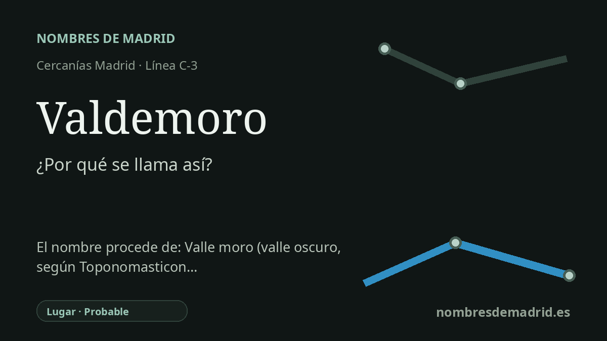

Publicado el · Investigación de Nombres de Madrid · Cómo verificamos cada origen · 7 fuentes consultadas
Respuesta rápida
La estación de Valdemoro toma su nombre del municipio al que sirve. La explicación mejor respaldada interpreta el topónimo como un 'valle oscuro' romance, más que como un literal 'valle de los moros'.
La historia del nombre
La estación de Valdemoro toma su nombre directamente de Valdemoro, el municipio del sur de Madrid en el que se encuentra. No está dedicada a una persona, a un santo, a una batalla ni a una compañía ferroviaria: traslada al mapa de Cercanías el topónimo local.
La fuente etimológica más autorizada localizada, Toponomasticon Hispaniae, interpreta Valdemoro como un compuesto castellano. El primer elemento es valle; la parte difícil es moro. La ficha redactada por Emilio Nieto Ballester sostiene que, en este caso, moro probablemente funciona como adjetivo con el sentido de 'oscuro' o 'moreno', de modo que el nombre significaría algo parecido a 'valle oscuro' o 'valle moreno'.
Esa lectura también ayuda a explicar la forma moderna con de. Toponomasticon Hispaniae propone una evolución desde una forma como Vallemoro a Valmoro y después Valdemoro, con un de añadido por analogía con muchos topónimos españoles en Valde-. La misma fuente señala nombres emparentados como Valmoreno, Valmorisco, Valdemorito y Valmoro como apoyo a una interpretación adjetival, no necesariamente étnica.
La población es muy anterior al ferrocarril. El Ayuntamiento indica que no se conserva testimonio escrito sobre Valdemoro antes de la Edad Media y que el lugar quedó vinculado al concejo segoviano en 1190, bajo Alfonso VIII. La estación llegó mucho después: Valdemoro fue elegida como parada intermedia de la línea Madrid-Aranjuez, inaugurada el 9 de febrero de 1851.
Existen explicaciones alternativas, entre ellas 'valle del moro' o 'de los moros', el árabe Wadi al-murr, las moras o morales, un antropónimo Maurus y una teoría basada en muros o ruinas. Son tradiciones locales y posibilidades eruditas útiles para entender el debate, pero la mejor evidencia actual favorece la interpretación romance de 'valle oscuro'. La confianza es alta en que la estación se llama por el municipio, y probable, no absoluta, en cuanto a la etimología profunda del topónimo.